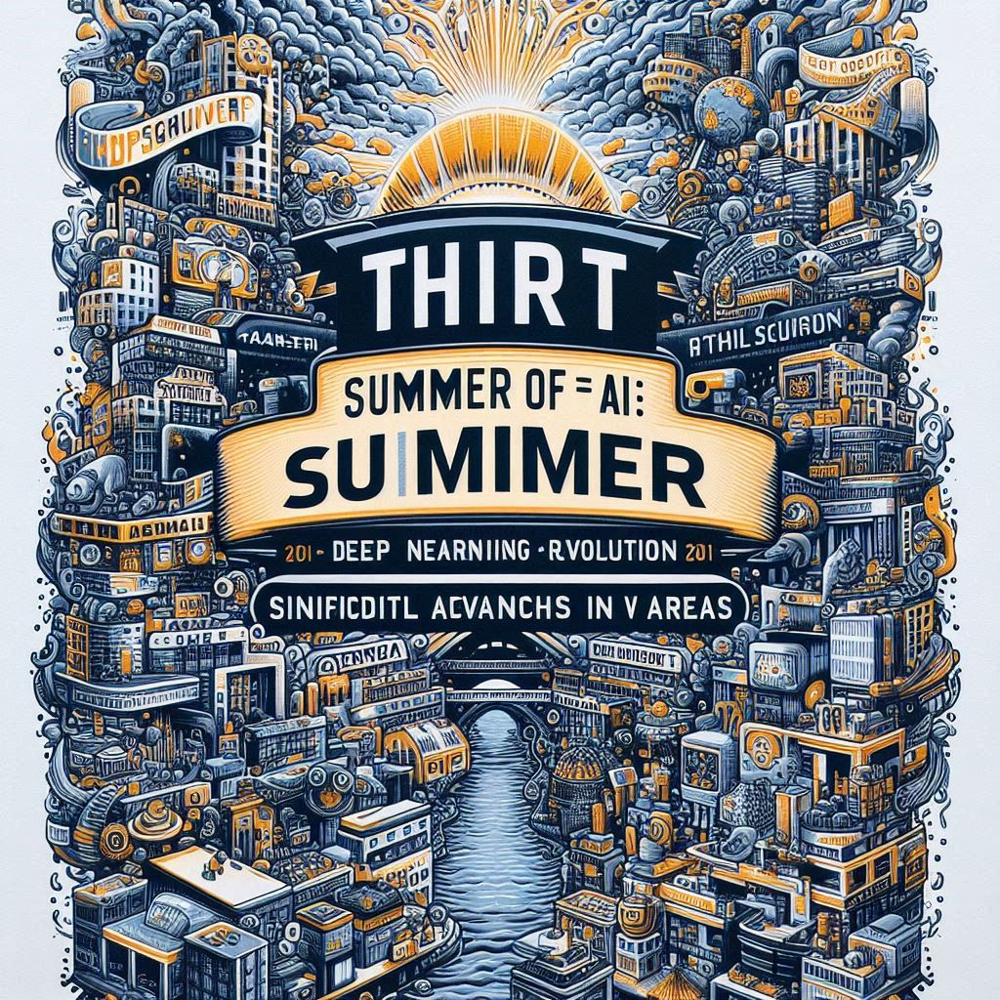

2. Historia y desarrollo
.......
Contenido
2. Historia y desarrollo

La inteligencia artificial (IA), la idea de crear máquinas pensantes, es un concepto que ha fascinado a la humanidad desde la antigüedad. Orígenes míticos: Desde los autómatas de la mitología griega, la IA ha sido un tema recurrente en la cultura humana.
Los primeros filósofos: Aristóteles y Descartes ya reflexionaban sobre la posibilidad de una mente artificial. Nacimiento de la IA como campo de estudio: Conferencia de Dartmouth (1956): Marcó el inicio oficial de la IA. Años dorados (1950-1970): Gran optimismo y primeros logros en áreas como el ajedrez y la traducción. Primer invierno de la IA (1970-1980): Desilusión y reducción de fondos debido a las limitaciones tecnológicas.
Renacimiento de la IA: Segundo verano de la IA (1980-1990): Nuevo impulso con los sistemas expertos. El "Segundo Verano de la IA" (1980-1990) fue un período de gran entusiasmo y avance en el campo de la Inteligencia Artificial, marcado por el auge de los sistemas expertos. ¿Qué eran los sistemas expertos? Los sistemas expertos eran programas informáticos diseñados para emular el razonamiento de un experto humano en un dominio específico. Estos sistemas utilizaban una base de conocimientos y reglas para tomar decisiones y resolver problemas complejos. Por ejemplo, un sistema experto en medicina podía diagnosticar enfermedades basándose en los síntomas del paciente. ¿Por qué fue tan importante este período? Financiamiento: Hubo un aumento significativo en la inversión gubernamental y empresarial en la investigación de la IA, lo que permitió a los investigadores desarrollar sistemas expertos más sofisticados. Aplicaciones prácticas: Los sistemas expertos encontraron aplicaciones en una amplia gama de campos, desde la medicina hasta la ingeniería, demostrando el potencial de la IA para resolver problemas del mundo real. Desarrollo de herramientas: Se crearon herramientas y lenguajes de programación especializados para el desarrollo de sistemas expertos, lo que facilitó la creación de estos sistemas. ¿Cuáles fueron los principales desafíos y limitaciones? Fragilidad del conocimiento: Los sistemas expertos eran muy dependientes de la calidad y la exhaustividad de la base de conocimientos, lo que los hacía vulnerables a errores y a cambios en el dominio. Dificultad de adquisición del conocimiento: El proceso de adquirir y representar el conocimiento de un experto humano en una forma que una máquina pudiera entender era laborioso y costoso. Falta de capacidad de aprendizaje: Los sistemas expertos no podían aprender de nuevas experiencias ni adaptarse a cambios en el entorno. ¿Por qué se considera un "verano" de la IA? Al igual que el primer verano de la IA en la década de 1950, este período se caracterizó por un gran optimismo y expectativas elevadas sobre el futuro de la IA. Sin embargo, al igual que el primer verano, el entusiasmo se enfrió gradualmente a medida que se hicieron evidentes las limitaciones de los sistemas expertos. ¿Qué sucedió después del Segundo Verano? A pesar de que el entusiasmo inicial disminuyó, el trabajo realizado durante el Segundo Verano de la IA sentó las bases para los avances posteriores en el campo. Las ideas y las técnicas desarrolladas durante este período continuaron siendo refinadas y ampliadas, lo que condujo al surgimiento de nuevas áreas de investigación como el aprendizaje automático y el procesamiento del lenguaje natural.
Tercer verano de la IA (2010-presente): Revolución del deep learning y avances significativos en
diversas áreas.
Este término se utiliza para describir la revitalización de la investigación y el desarrollo en IA que
comenzó alrededor de 2010. Al igual que los "veranos" anteriores, se caracteriza por un gran entusiasmo,
inversiones significativas y avances revolucionarios.

¿Qué es el Deep Learning y por qué es tan importante?
El deep learning es un subcampo del aprendizaje automático que utiliza redes neuronales artificiales con
múltiples capas para aprender de grandes cantidades de datos. Estas redes neuronales son inspiradas en
el funcionamiento del cerebro humano y son capaces de aprender características abstractas de los datos,
lo que les permite realizar tareas complejas.
 El deep learning ha impulsado avances significativos en una amplia gama de áreas, incluyendo:
Vehículos autónomos: El deep learning permite a los vehículos autónomos percibir su entorno, tomar
decisiones y navegar de manera segura.
Asistentes virtuales: Los asistentes virtuales como Siri, Alexa y Google Assistant se han vuelto mucho
más inteligentes gracias al deep learning.
Diagnóstico médico: El deep learning se utiliza para analizar imágenes médicas y detectar enfermedades
con mayor precisión.
Finanzas: Se utiliza para detectar fraudes, predecir el mercado de valores y personalizar las
recomendaciones de inversión.
Entretenimiento: El deep learning se utiliza para crear efectos especiales realistas en películas y
videojuegos, así como para generar contenido personalizado para los usuarios.
Factores que han contribuido a este auge:
Disponibilidad de grandes cantidades de datos: El aumento exponencial de los datos ha proporcionado a
los algoritmos de deep learning el combustible que necesitan para aprender.
Aumento de la potencia de computación: El desarrollo de GPUs y unidades de procesamiento tensorial
(TPUs) ha permitido entrenar redes neuronales más grandes y complejas.
Desarrollo de nuevas arquitecturas de redes neuronales: Investigadores han desarrollado nuevas
arquitecturas de redes neuronales, como las redes convolucionales y las redes recurrentes, que son
especialmente adecuadas para diferentes tipos de tareas.
Desafíos y consideraciones:
Sesgos en los datos: Los modelos de deep learning pueden aprender y perpetuar los sesgos presentes en
los datos de entrenamiento.
Interpretabilidad: A menudo es difícil entender cómo los modelos de deep learning llegan a sus
conclusiones, lo que plantea desafíos en áreas como la medicina y la justicia.
Privacidad: La recopilación y el uso de grandes cantidades de datos plantean preocupaciones sobre la
privacidad.
El deep learning ha impulsado avances significativos en una amplia gama de áreas, incluyendo:
Vehículos autónomos: El deep learning permite a los vehículos autónomos percibir su entorno, tomar
decisiones y navegar de manera segura.
Asistentes virtuales: Los asistentes virtuales como Siri, Alexa y Google Assistant se han vuelto mucho
más inteligentes gracias al deep learning.
Diagnóstico médico: El deep learning se utiliza para analizar imágenes médicas y detectar enfermedades
con mayor precisión.
Finanzas: Se utiliza para detectar fraudes, predecir el mercado de valores y personalizar las
recomendaciones de inversión.
Entretenimiento: El deep learning se utiliza para crear efectos especiales realistas en películas y
videojuegos, así como para generar contenido personalizado para los usuarios.
Factores que han contribuido a este auge:
Disponibilidad de grandes cantidades de datos: El aumento exponencial de los datos ha proporcionado a
los algoritmos de deep learning el combustible que necesitan para aprender.
Aumento de la potencia de computación: El desarrollo de GPUs y unidades de procesamiento tensorial
(TPUs) ha permitido entrenar redes neuronales más grandes y complejas.
Desarrollo de nuevas arquitecturas de redes neuronales: Investigadores han desarrollado nuevas
arquitecturas de redes neuronales, como las redes convolucionales y las redes recurrentes, que son
especialmente adecuadas para diferentes tipos de tareas.
Desafíos y consideraciones:
Sesgos en los datos: Los modelos de deep learning pueden aprender y perpetuar los sesgos presentes en
los datos de entrenamiento.
Interpretabilidad: A menudo es difícil entender cómo los modelos de deep learning llegan a sus
conclusiones, lo que plantea desafíos en áreas como la medicina y la justicia.
Privacidad: La recopilación y el uso de grandes cantidades de datos plantean preocupaciones sobre la
privacidad.
Hitos clave y figuras destacadas en la Inteligencia Artificial
Figuras Destacadas
- Alan Turing:
- Padre de la informática.
- Propuso el Test de Turing.
- John McCarthy:
- Acuñó el término "inteligencia artificial".
- Marvin Minsky:
- Pionero en redes neuronales artificiales.
- Geoffrey Hinton, Yann LeCun, Yoshua Bengio:
- Padres del deep learning.